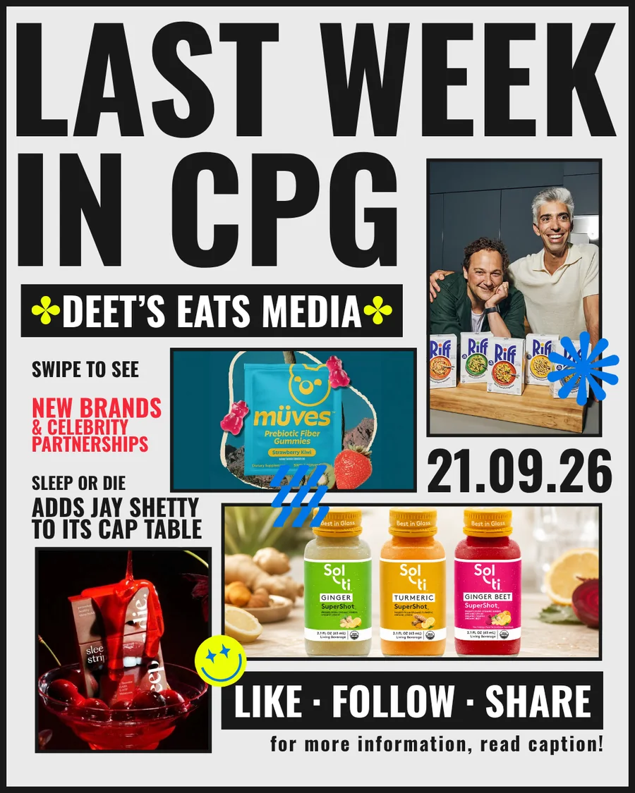

Orders + revenue
Bring retailer, distributor, Shopify, Faire, Amazon, PDF, email, and EDI inputs into one reviewable workflow.
Pickle Advisors helps growing consumer packaged goods (CPG) brands build practical AI workflows for retailer orders, inventory, reporting, and launches.
Pickle adapts AI around the process your brand already uses. No forced ERP replacement and no generic roadmap.
Bring retailer, distributor, Shopify, Faire, Amazon, PDF, email, and EDI inputs into one reviewable workflow.
Connect SKUs, case packs, 3PL inventory, freight, invoices, and payment follow-up without replacing your core systems.
Coordinate launches and reporting, with people approving exceptions, commitments, and the decisions that stay human.
The AI Audit identifies which workflow is ready, what needs cleaning up, and where human approval belongs.
How advisory works
Jonathan Deeter founded Pickle Advisors and publishes Deet’s Eats Media. His experience spans more than a decade across finance, startup operations, AI implementation, and consumer media.
The person shaping your recommendation is accountable for making it work. From the first workflow diagnosis through implementation, you work directly with Jonathan.
Deet’s Eats Media is Jonathan Deeter’s independent publication covering consumer brands, retail, funding, and the decisions underneath them.

Your weekly bowl of CPG news, served with a side of spice.
Read this issueOne sharp weekly read before your next meeting.
Subscribe on SubstackFounder conversations beyond the launch story. The people, decisions, and operating realities behind consumer brands.
Discuss a media partnership ↗A future platform for selective early-stage investments informed by operating diligence and live market judgment.
Discuss a company ↗Pickle VC is in development and is not an open public fund. This is not an offer to sell, a solicitation to buy, or investment advice. Conversations are private and selective. Advisory does not guarantee capital, and media participation does not guarantee investment.